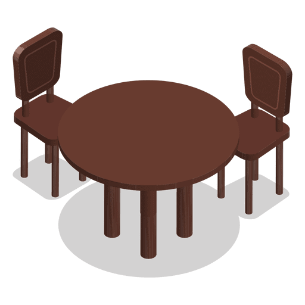

<!--
  Generated template for the MenuSubOrdenPage page.

  See http://ionicframework.com/docs/components/#navigation for more info on
  Ionic pages and navigation.
-->
<ion-header>
  <ion-navbar color="primary">
    <ion-title>Agregar a mesa</ion-title>
    <ion-buttons left>
      <button (click)="salir()" ion-button icon-end icon-only>
        <ion-icon name="close"></ion-icon>
      </button>
    </ion-buttons>
  </ion-navbar>
</ion-header>
<ion-content class="fondo" padding>
  <h3>Mesa a elegir</h3>
  <ion-grid>
    <ion-row>
      <ion-col *ngFor="let item of arreglo" col-4 col-sm-3 col-md-2 col-lg-1 col-xl-1>
        <div class="divs" [ngClass]="item.clase" (click)="agregarCarrito(item)">
          
          <h5>Mesa {{item.id_mesa}}</h5>
        </div>
      </ion-col>
    </ion-row>
  </ion-grid>
</ion-content>

<ion-footer>
  <ion-toolbar color="gris" style="text-align: center">
    <button (click)="mesasDisponibles();" ion-button icon-only color="primary" style="width: 80%;">
      Mesas disponibles
    </button>
  </ion-toolbar>
</ion-footer>